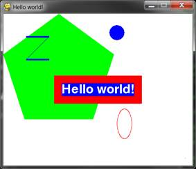
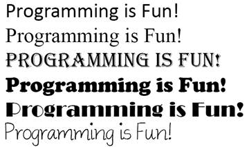
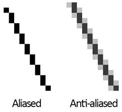
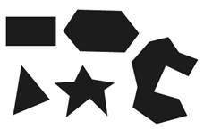
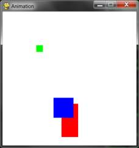
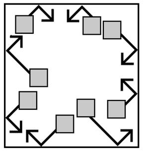

|
|
Chapter 17 |
Graphics and Animation |
Topics Covered In This Chapter:
· Installing Pygame
· Colors and Fonts in Pygame
· Aliased and Anti-Aliased Graphics
· Attributes
· The pygame.font.Font, pygame.Surface, pygame.Rect, and pygame.PixelArray Data Types
· Constructor Functions
· Pygame’s Drawing Functions
· The blit() Method for Surface Objects
· Events
· Animation
So far, all of our games have only used text. Text is displayed on the screen as output, and the player types in text from the keyboard as input. Just using text makes programming easy to learn. But in this chapter, we’ll make some more exciting games with advanced graphics and sound using the Pygame module.
Chapters 17, 18, and 19 teaches you how to use Pygame to make games with graphics, animation, mouse input, and sound. In these chapters we’ll write source code for simple programs that are not games but demonstrate the Pygame concepts we’ve learned. The game in Chapter 20 will use all these concepts together to create a game.
Pygame doesn’t come with Python. Like Python, Pygame is free to download. In a web browser, go to the URL http://invpy.org/downloadpygame and download the Pygame installer file for your operating system and version of Python.
Open the installer file after downloading it, and follow the instructions until Pygame has finished installing. To check that Pygame installed correctly, type the following into the interactive shell:
>>> import pygame
If nothing appears after you hit the enter key, then you know Pygame was successfully installed. If the error ImportError: No module named pygame appears, try to install Pygame again (and make sure you typed import pygame correctly).

Figure 17-1: The pygame.org website.
The Pygame website at http://pygame.org has information on how to use Pygame, as well as several other game programs made with Pygame. Figure 17-1 shows the Pygame website.
The first Pygame program is a new “Hello World!” program like you created at the beginning of the book. This time, you’ll use Pygame to make “Hello world!” appear in a graphical window instead of as text.
Pygame doesn’t work well with the interactive shell. Because of this, you can only write Pygame programs and cannot send instructions to Pygame one at a time through the interactive shell.
Pygame programs also do not use the input() function. There is no text input and output. Instead, the program displays output in a window by drawing graphics and text to the window. Pygame program’s input comes from the keyboard and the mouse through things called events. Events are explained in the next chapter.
Type in the following code into the file editor, and save it as pygameHelloWorld.py. If you get errors after typing this code in, compare the code you typed to the book’s code with the online diff tool at http://invpy.com/diff/pygameHelloWorld.
pygameHelloWorld.py
1. import pygame, sys
2. from pygame.locals import *
3.
4. # set up pygame
5. pygame.init()
6.
7. # set up the window
8. windowSurface = pygame.display.set_mode((500, 400), 0, 32)
9. pygame.display.set_caption('Hello world!')
10.
11. # set up the colors
12. BLACK = (0, 0, 0)
13. WHITE = (255, 255, 255)
14. RED = (255, 0, 0)
15. GREEN = (0, 255, 0)
16. BLUE = (0, 0, 255)
17.
18. # set up fonts
19. basicFont = pygame.font.SysFont(None, 48)
20.
21. # set up the text
22. text = basicFont.render('Hello world!', True, WHITE, BLUE)
23. textRect = text.get_rect()
24. textRect.centerx = windowSurface.get_rect().centerx
25. textRect.centery = windowSurface.get_rect().centery
26.
27. # draw the white background onto the surface
28. windowSurface.fill(WHITE)
29.
30. # draw a green polygon onto the surface
31. pygame.draw.polygon(windowSurface, GREEN, ((146, 0), (291, 106), (236, 277), (56, 277), (0, 106)))
32.
33. # draw some blue lines onto the surface
34. pygame.draw.line(windowSurface, BLUE, (60, 60), (120, 60), 4)
35. pygame.draw.line(windowSurface, BLUE, (120, 60), (60, 120))
36. pygame.draw.line(windowSurface, BLUE, (60, 120), (120, 120), 4)
37.
38. # draw a blue circle onto the surface
39. pygame.draw.circle(windowSurface, BLUE, (300, 50), 20, 0)
40.
41. # draw a red ellipse onto the surface
42. pygame.draw.ellipse(windowSurface, RED, (300, 250, 40, 80), 1)
43.
44. # draw the text's background rectangle onto the surface
45. pygame.draw.rect(windowSurface, RED, (textRect.left - 20, textRect.top - 20, textRect.width + 40, textRect.height + 40))
46.
47. # get a pixel array of the surface
48. pixArray = pygame.PixelArray(windowSurface)
49. pixArray[480][380] = BLACK
50. del pixArray
51.
52. # draw the text onto the surface
53. windowSurface.blit(text, textRect)
54.
55. # draw the window onto the screen
56. pygame.display.update()
57.
58. # run the game loop
59. while True:
60. for event in pygame.event.get():
61. if event.type == QUIT:
62. pygame.quit()
63. sys.exit()
When you run this program, you should see a new window appear which looks like Figure 17-2.
What is nice about using a window instead of a console is that the text can appear anywhere in the window, not just after the previous text you have printed. The text can be any color and size. The window is like a blank painting canvas, and you can draw whatever you like on it.
Importing the Pygame Module
Let’s go over each of these lines of code and find out what they do.
1. import pygame, sys
2. from pygame.locals import *

Figure 17-2: The “Hello World” program.
First you need to import the pygame module so you can call Pygame’s functions. You can import several modules on the same line by delimiting the module names with commas. Line 1 imports both the pygame and sys modules.
The second line imports the pygame.locals module. This module contains many constant variables that you’ll use with Pygame such as QUIT or K_ESCAPE (explained later). However, using the form from moduleName import * you can import the pygame.locals module but not have to type pygame.locals in front of the module’s constants.
If you have from sys import * instead of import sys in your program, you could call exit() instead of sys.exit() in your code. But most of the time it is better to use the full function name so you know which module the function is in.
The pygame.init() Function
4. # set up pygame
5. pygame.init()
All Pygame programs must call the pygame.init() after importing the pygame module but before calling any other Pygame functions. This perform’s Pygame’s necessary initialization steps.
Tuple values are similar to lists, except they use parentheses instead of square brackets. Also, like strings, tuples cannot be modified. For example, try entering the following into the interactive shell:
>>> spam = ('Life', 'Universe', 'Everything', 42)
>>> spam[0]
'Life'
>>> spam[3]
42
>>> spam[1:3]
('Universe', 'Everything')
The pygame.display.set_mode() and pygame.display.set_caption() Functions
7. # set up the window
8. windowSurface = pygame.display.set_mode((500, 400), 0, 32)
9. pygame.display.set_caption('Hello world!')
Line 8 creates a GUI window by calling the set_mode() method in the pygame.display module. (The display module is a module inside the pygame module. Even the pygame module has its own modules!)
A pixel is the tiniest dot on your computer screen. A single pixel on your screen can light up into any color. All the pixels on your screen work together to display all the pictures you see. To create a window 500 pixels wide and 400 pixels high, use the tuple (500, 400) for the first parameter to pygame.display.set_mode().
There are three parameters to the set_mode() method. The first is a tuple of two integers for the width and height of the window, in pixels. The second and third options are advanced options that are beyond the scope of this book. Just pass 0 and 32 for them, respectively.
The set_mode() function returns a pygame.Surface object (which we will call Surface objects for short). Objects is just another name for a value of a data type that has methods. For example, strings are objects in Python because they have data (the string itself) and methods (such as lower() and split()). The Surface object represents the window.
Variables store references to objects just like they store reference for lists and dictionaries. The References section in Chapter 10 explains references.
11. # set up the colors
12. BLACK = (0, 0, 0)
13. WHITE = (255, 255, 255)
14. RED = (255, 0, 0)
15. GREEN = (0, 255, 0)
16. BLUE = (0, 0, 255)
Table 17-1: Colors and their RGB values.
|
Color |
RGB Values |
|
Black |
( 0, 0, 0) |
|
Blue |
( 0, 0, 255) |
|
Gray |
(128, 128, 128) |
|
Green |
( 0, 128, 0) |
|
Lime |
( 0, 255, 0) |
|
Purple |
(128, 0, 128) |
|
Red |
(255, 0, 0) |
|
Teal |
( 0, 128, 128) |
|
White |
(255, 255, 255) |
|
Yellow |
(255, 255, 0) |
There are three primary colors of light: red, green and blue. By combining different amounts of these three colors (which is what your computer screen does), you can form any other color. In Pygame, tuples of three integers are the data structures that represent a color. These are called RGB Color values.
The first value in the tuple is how much red is in the color. A value of 0 means there’s no red in this color, and a value of 255 means there’s a maximum amount of red in the color. The second value is for green and the third value is for blue. These three integers form an RGB tuple.
For example, the tuple (0, 0, 0) has no amount of red, green, or blue. The resulting color is completely black. The tuple (255, 255, 255) has a maximum amount of red, green, and blue, resulting in white.
The tuple (255, 0, 0) represents the maximum amount of red but no amount of green and blue, so the resulting color is red. Similarly, (0, 255, 0) is green and (0, 0, 255) is blue.
You can mix the amount of red, green, and blue to get any shade of any color. Table 17-1 has some common colors and their RGB values. The web page http://invpy.com/colors also lists several more tuple values for different colors.
18. # set up fonts
19. basicFont = pygame.font.SysFont(None, 48)

Figure 17-3: Examples of different fonts.
A font is a complete set of letters, numbers, symbols, and characters drawn in a single style. Figure 17-3 shows the same sentence printed in different fonts.
In our earlier games, we only told Python to print text. The color, size, and font that was used to display this text was completely determined by your operating system. The Python program couldn’t change the font. However, Pygame can draw text in any font on your computer.
Line 19 creates a pygame.font.Font object (called Font objects for short) by calling the pygame.font.SysFont() function. The first parameter is the name of the font, but we will pass the None value to use the default system font. The second parameter is the size of the font (which is measured in units called points).
The render() Method for Font Objects
21. # set up the text
22. text = basicFont.render('Hello world!', True, WHITE, BLUE)
23. textRect = text.get_rect()

Figure 17-4: An enlarged view of an aliased line and an anti-aliased line.
The Font object that you’ve stored in the basicFont variable has a method called render(). This method will return a Surface object with the text drawn on it. The first parameter to render() is the string of the text to draw. The second parameter is a Boolean for whether or not you want anti-aliasing.
On line 22, pass True to use anti-aliasing. Anti-aliasing blurs your text slightly to make it look smoother. Figure 17-4 shows what a line (with enlarged pixels) looks like with and without anti-aliasing.
24. textRect.centerx = windowSurface.get_rect().centerx
25. textRect.centery = windowSurface.get_rect().centery
The pygame.Rect data type (called Rect for short) represent rectangular areas of a certain size and location. To create a new Rect object call the function pygame.Rect(). The parameters are integers for the XY coordinates of the top left corner, followed by the width and height, all in pixels.
The function name with the parameters looks like this: pygame.Rect(left, top, width, height)
Just like methods are functions that are associated with an object, attributes are variables that are associated with an object. The Rect data type has many attributes that describe the rectangle they represent. Table 17-2 is a list of attributes of a Rect object named myRect.
The great thing about Rect objects is that if you modify any of these attributes, all the other attributes will automatically modify themselves also. For example, if you create a Rect object that is 20 pixels wide and 20 pixels high, and has the top left corner at the coordinates (30, 40), then the X-coordinate of the right side will automatically be set to 50 (because 20 + 30 = 50).
However, if you change the left attribute with the line myRect.left = 100, then Pygame will automatically change the right attribute to 120 (because 20 + 100 = 120). Every other attribute for that Rect object is also updated.
The get_rect() Methods for pygame.font.Font and pygame.Surface Objects
Notice that both the Font object (stored in the text variable on line 23) and the Surface object (stored in windowSurface variable on line 24) both have a method called get_rect(). Technically, these are two different methods. But the programmers of Pygame gave them the same name because they both do the same thing and return Rect objects that represent the size and position of the Font or Surface object.
The module you import is pygame, and inside the pygame module are the font and surface modules. Inside those modules are the Font and Surface data types. The Pygame programmers made the modules begin with a lowercase letter, and the data types begin with an uppercase letter. This makes it easier to distinguish the data types and the modules.
Create a pygame.Rect object by calling a function named pygame.Rect(). The pygame.Rect() function has the same name as the pygame.Rect data type. Functions that have the same name as their data type and create objects or values of this data type are called constructor functions.
The fill() Method for Surface Objects
27. # draw the white background onto the surface
28. windowSurface.fill(WHITE)
You want to fill the entire surface stored in windowSurface with the color white. The fill() function will completely cover the entire surface with the color you pass as the parameter. (In this case, the WHITE variable is set to the value (255, 255, 255).
An important thing to know about Pygame is that the window on the screen won’t change when you call the fill() method or any of the other drawing functions. These will change the Surface object, but the Surface object won’t be drawn on the screen until the pygame.display.update() function is called.
This is because modifying the Surface object in the computer’s memory is much faster than modifying the image on the screen. It is much more efficient to draw onto the screen once after all of the drawing functions have drawn to the surface.
The pygame.draw.polygon() Function
30. # draw a green polygon onto the surface
31. pygame.draw.polygon(windowSurface, GREEN, ((146, 0), (291, 106), (236, 277), (56, 277), (0, 106)))
A polygon is multisided shape with straight line sides. Circles and ellipses are not polygons. Figure 17-5 has some examples of polygons.
Table 17-2: Rect Attributes
|
pygame.Rect Attribute |
Description |
|
myRect.left |
Integer value of the X-coordinate of the left side of the rectangle. |
|
myRect.right |
Integer value of the X-coordinate of the right side of the rectangle. |
|
myRect.top |
Integer value of the Y-coordinate of the top side of the rectangle. |
|
myRect.bottom |
Integer value of the Y-coordinate of the bottom side of the rectangle. |
|
myRect.centerx |
Integer value of the X-coordinate of the center of the rectangle. |
|
myRect.centery |
Integer value of the Y-coordinate of the center of the rectangle. |
|
myRect.width |
Integer value of the width of the rectangle. |
|
myRect.height |
Integer value of the height of the rectangle. |
|
myRect.size |
A tuple of two integers: (width, height) |
|
myRect.topleft |
A tuple of two integers: (left, top) |
|
myRect.topright |
A tuple of two integers: (right, top) |
|
myRect.bottomleft |
A tuple of two integers: (left, bottom) |
|
myRect.bottomright |
A tuple of two integers: (right, bottom) |
|
myRect.midleft |
A tuple of two integers: (left, centery) |
|
myRect.midright |
A tuple of two integers: (right, centery) |
|
myRect.midtop |
A tuple of two integers: (centerx, top) |
|
myRect.midbottom |
A tuple of two integers: (centerx, bottom) |

Figure 17-5: Examples of Polygons.
The pygame.draw.polygon() function can draw any polygon shape you give it. The parameters, in order, are:
· The Surface object to draw the polygon on.
· The color of the polygon.
· A tuple of tuples that represents the XY coordinates of the points to draw in order. The last tuple will automatically connect to the first tuple to complete the shape.
· Optionally, an integer for the width of the polygon lines. Without this, the polygon will be filled in.
Line 31 draws a green pentagon on the Surface object.
The pygame.draw.line() Function
33. # draw some blue lines onto the surface
34. pygame.draw.line(windowSurface, BLUE, (60, 60), (120, 60), 4)
35. pygame.draw.line(windowSurface, BLUE, (120, 60), (60, 120))
36. pygame.draw.line(windowSurface, BLUE, (60, 120), (120, 120), 4)
The parameters, in order, are:
· The Surface object to draw the line on.
· The color of the line.
· A tuple of two integers for the XY coordinate of one end of the line.
· A tuple of two integers for the XY coordinates of the other end of the line.
· Optionally, an integer for the width of the line.
If you pass 4 for the width, the line will be four pixels thick. If you do not specify the width parameter, it will take on the default value of 1. The three pygame.draw.line() calls on lines 34, 35, and 36 draw the blue “Z” on the Surface object.
The pygame.draw.circle() Function
38. # draw a blue circle onto the surface
39. pygame.draw.circle(windowSurface, BLUE, (300, 50), 20, 0)
The parameters, in order, are:
· The Surface object to draw the circle on.
· The color of the circle.
· A tuple of two integers for the XY coordinate of the center of the circle.
· An integer for the radius (that is, the size) of the circle.
· Optionally, an integer for the width. A width of 0 means that the circle will be filled in.
Line 39 draws a blue circle on the Surface object.
The pygame.draw.ellipse() Function
41. # draw a red ellipse onto the surface
42. pygame.draw.ellipse(windowSurface, RED, (300, 250, 40, 80), 1)
The pygame.draw.ellipse() function is similar to the pygame.draw.circle() function. The parameters, in order, are:
· The Surface object to draw the ellipse on.
· The color of the ellipse.
· A tuple of four integers is passed for the left, top, width, and height of the ellipse.
· Optionally, an integer for the width. A width of 0 means that the circle will be filled in.
Line 42 draws a red ellipse on the Surface object.
The pygame.draw.rect() Function
44. # draw the text's background rectangle onto the surface
45. pygame.draw.rect(windowSurface, RED, (textRect.left - 20, textRect.top - 20, textRect.width + 40, textRect.height + 40))
The pygame.draw.rect() function will draw a rectangle. The third parameter is a tuple of four integers for the left, top, width, and height of the rectangle. Instead of a tuple of four integers for the third parameter, you can also pass a Rect object.
On line 45, you want the rectangle you draw to be 20 pixels around all the sides of the text. This is why you want the drawn rectangle’s left and top to be the left and top of textRect minus 20. (Remember, you subtract because coordinates decrease as you go left and up.) And the width and height are equal to the width and height of the textRect plus 40 (because the left and top were moved back 20 pixels, so you need to make up for that space).
The pygame.PixelArray Data Type
47. # get a pixel array of the surface
48. pixArray = pygame.PixelArray(windowSurface)
49. pixArray[480][380] = BLACK
Line 48 creates a pygame.PixelArray object (called a PixelArray object for short). The PixelArray object is a list of lists of color tuples that represents the Surface object you passed it.
Line 48 passes windowSurface to the pygame.PixelArray() call, so assigning BLACK to pixArray[480][380] on line 49 will change the pixel at the coordinates (480, 380) to be a black pixel. Pygame will automatically modify the windowSurface object with this change.
The first index in the PixelArray object is for the X-coordinate. The second index is for the Y-coordinate. PixelArray objects make it easy to set individual pixels on a PixelArray object to a specific color.
50. del pixArray
Creating a PixelArray object from a Surface object will lock that Surface object. Locked means that no blit() function calls (described next) can be made on that Surface object. To unlock the Surface object, you must delete the PixelArray object with the del operator. If you forget to delete the PixelArray object, you’ll get an error message that says pygame.error: Surfaces must not be locked during blit.
The blit() Method for Surface Objects
52. # draw the text onto the surface
53. windowSurface.blit(text, textRect)
The blit() method will draw the contents of one Surface object onto another Surface object. Line 54 will draw the “Hello world!” Surface object in text and draws it to the Surface object stored in the windowSurface variable.
The second parameter to blit() specifies where on the windowSurface surface the text surface should be drawn. Pass the Rect object you got from calling text.get_rect() on line 23.
The pygame.display.update() Function
55. # draw the window onto the screen
56. pygame.display.update()
In Pygame, nothing is actually drawn to the screen until the pygame.display.update() function is called. This is because drawing to the screen is slow compared to drawing on the Surface objects in the computer’s memory. You do not want to update to the screen after each drawing function is called, but only update the screen once after all the drawing functions have been called.
In previous games, all of the programs print everything immediately until they reach a input() function call. At that point, the program stops and waits for the user to type something in and press enter. But Pygame programs are constantly running through a loop called the game loop. In this program, all the lines of code in the game loop execute about a hundred times a second.
The game loop is a loop that constantly checks for new events, updates the state of the window, and draws the window on the screen. Events are objects of the pygame.event.Event data type that are generated by Pygame whenever the user presses a key, clicks or moves the mouse, or makes some other event occur. (These events are listed on Table 18-1.)
58. # run the game loop
59. while True:
Line 59 is the start of the game loop. The condition for the while statement is set to True so that it loops forever. The only time the loop exits is if an event causes the program to terminate.
The pygame.event.get() Function
60. for event in pygame.event.get():
61. if event.type == QUIT:
Calling pygame.event.get() retrieves any new pygame.event.Event objects (called Event objects for short) that have been generated since the last call to pygame.event.get(). These events are returned as a list of Event objects. All Event objects have an attribute called type which tell us what type of event it is. (In this chapter we only deal with the QUIT types of event. The other types of events are covered in the next chapter.)
Line 60 has a for loop to iterate over each Event object in the list returned by pygame.event.get(). If the type attribute of the event is equal to the constant variable QUIT, then you know the user has closed the window and wants to terminate the program.
Pygame generates the QUIT event (which was imported from the pygame.locals module) when the user clicks on the close button (usually an ×) of the program’s window. It is also generated if the computer is shutting down and tries to terminate all the running programs. For whatever reason the QUIT event was generated, you should terminate the program.
The pygame.quit() Function
62. pygame.quit()
63. sys.exit()
If the QUIT event has been generated, the program should call both pygame.quit() and sys.exit().
This has been the simple “Hello world!” program from Pygame. We’ve covered many new topics that we didn't have to deal with in our previous games. Even though the code is more complicated, the Pygame programs can also be much more fun than text games. Let’s learn how to create games with animated graphics that move.
In this program we have several different blocks bouncing off of the edges of the window. The blocks are different colors and sizes and move only in diagonal directions. To animate the blocks (that is, make them look like they are moving) we will move the blocks a few pixels over on each iteration through the game loop. This will make it look like the blocks are moving around the screen.
Type the following program into the file editor and save it as animation.py. If you get errors after typing this code in, compare the code you typed to the book’s code with the online diff tool at http://invpy.com/diff/animation.
animation.py
1. import pygame, sys, time
2. from pygame.locals import *
3.
4. # set up pygame
5. pygame.init()
6.
7. # set up the window
8. WINDOWWIDTH = 400
9. WINDOWHEIGHT = 400
10. windowSurface = pygame.display.set_mode((WINDOWWIDTH, WINDOWHEIGHT), 0, 32)
11. pygame.display.set_caption('Animation')
12.
13. # set up direction variables
14. DOWNLEFT = 1
15. DOWNRIGHT = 3
16. UPLEFT = 7
17. UPRIGHT = 9
18.
19. MOVESPEED = 4
20.
21. # set up the colors
22. BLACK = (0, 0, 0)
23. RED = (255, 0, 0)
24. GREEN = (0, 255, 0)
25. BLUE = (0, 0, 255)
26.
27. # set up the block data structure
28. b1 = {'rect':pygame.Rect(300, 80, 50, 100), 'color':RED, 'dir':UPRIGHT}
29. b2 = {'rect':pygame.Rect(200, 200, 20, 20), 'color':GREEN, 'dir':UPLEFT}
30. b3 = {'rect':pygame.Rect(100, 150, 60, 60), 'color':BLUE, 'dir':DOWNLEFT}
31. blocks = [b1, b2, b3]
32.
33. # run the game loop
34. while True:
35. # check for the QUIT event
36. for event in pygame.event.get():
37. if event.type == QUIT:
38. pygame.quit()
39. sys.exit()
40.
41. # draw the black background onto the surface
42. windowSurface.fill(BLACK)
43.
44. for b in blocks:
45. # move the block data structure
46. if b['dir'] == DOWNLEFT:
47. b['rect'].left -= MOVESPEED
48. b['rect'].top += MOVESPEED
49. if b['dir'] == DOWNRIGHT:
50. b['rect'].left += MOVESPEED
51. b['rect'].top += MOVESPEED
52. if b['dir'] == UPLEFT:
53. b['rect'].left -= MOVESPEED
54. b['rect'].top -= MOVESPEED
55. if b['dir'] == UPRIGHT:
56. b['rect'].left += MOVESPEED
57. b['rect'].top -= MOVESPEED
58.
59. # check if the block has move out of the window
60. if b['rect'].top < 0:
61. # block has moved past the top
62. if b['dir'] == UPLEFT:
63. b['dir'] = DOWNLEFT
64. if b['dir'] == UPRIGHT:
65. b['dir'] = DOWNRIGHT
66. if b['rect'].bottom > WINDOWHEIGHT:
67. # block has moved past the bottom
68. if b['dir'] == DOWNLEFT:
69. b['dir'] = UPLEFT
70. if b['dir'] == DOWNRIGHT:
71. b['dir'] = UPRIGHT
72. if b['rect'].left < 0:
73. # block has moved past the left side
74. if b['dir'] == DOWNLEFT:
75. b['dir'] = DOWNRIGHT
76. if b['dir'] == UPLEFT:
77. b['dir'] = UPRIGHT
78. if b['rect'].right > WINDOWWIDTH:
79. # block has moved past the right side
80. if b['dir'] == DOWNRIGHT:
81. b['dir'] = DOWNLEFT
82. if b['dir'] == UPRIGHT:
83. b['dir'] = UPLEFT
84.
85. # draw the block onto the surface
86. pygame.draw.rect(windowSurface, b['color'], b['rect'])
87.
88. # draw the window onto the screen
89. pygame.display.update()
90. time.sleep(0.02)

Figure 17-6: An altered screenshot of the Animation program.
In this program, we will have three different colored blocks moving around and bouncing off the walls. To do this, we need to first consider how we want the blocks to move.
Moving and Bouncing the Blocks
Each block will move in one of four diagonal directions. When the block hits the side of the window, it should bounce off the side and move in a new diagonal direction. The blocks will bounce as shown Figure 17-7.
The new direction that a block moves after it bounces depends on two things: which direction it was moving before the bounce and which wall it bounced off of. There are a total of eight possible ways a block can bounce: two different ways for each of the four walls.
For example, if a block is moving down and right, and then bounces off of the bottom edge of the window, we want the block’s new direction to be up and right.
We can represent the blocks with a Rect object to represent the position and size of the block, a tuple of three integers to represent the color of the block, and an integer to represent which of the four diagonal directions the block is currently moving.
On each iteration in the game loop, adjust the X and Y position of the block in the Rect object. Also, in each iteration draw all the blocks on the screen at their current position. As the program execution iterates over the game loop, the blocks will gradually move across the screen so that it looks like they are smoothly moving and bouncing around on their own.

Figure 17-7: The diagram of how blocks will bounce.
Creating and Setting Up Pygame and the Main Window
1. import pygame, sys, time
2. from pygame.locals import *
3.
4. # set up pygame
5. pygame.init()
6.
7. # set up the window
8. WINDOWWIDTH = 400
9. WINDOWHEIGHT = 400
10. windowSurface = pygame.display.set_mode((WINDOWWIDTH, WINDOWHEIGHT), 0, 32)
In this program, you’ll see that the size of the window’s width and height is used for more than just the call to set_mode(). Use constant variables so that if you ever want to change the size of the window, you only have to change lines 8 and 9. Since the window width and height never change during the program’s execution, a constant variable is a good idea.
11. pygame.display.set_caption('Animation')
Line 11 sets the window’s caption to 'Animation' by calling pygame.display.set_caption().
Setting Up Constant Variables for Direction
13. # set up direction variables
14. DOWNLEFT = 1
15. DOWNRIGHT = 3
16. UPLEFT = 7
17. UPRIGHT = 9
We will use the keys on the number pad of the keyboard to remind us which belongs to which direction. This is similar to the Tic Tac Toe game. 1 is down and left, 3 is down and right, 7 is up and left, and 9 is up and right. However, it may be hard to remember this, so instead use constant variables instead of these integer values.
You could have used any value you wanted for these directions instead of using a constant variable. For example, you could use the string 'downleft' to represent the down and left diagonal direction. However, if you ever mistype the 'downleft' string (for example, as 'fownleft'), Python would not recognize that you meant to type 'downleft' instead of 'downleft'. This bug would cause your program to behave strangely, but the program would not crash.
But if you use constant variables, and accidentally type the variable name FOWNLEFT instead of the name DOWNLEFT, Python would notice that there’s no such variable named FOWNLEFT and crash the program with an error. This would still be a pretty bad bug, but at least you would know about it immediately and could fix it.
19. MOVESPEED = 4
Use a constant variable to determine how fast the blocks should move. A value of 4 here means that each block will move 4 pixels on each iteration through the game loop.
Setting Up Constant Variables for Color
21. # set up the colors
22. BLACK = (0, 0, 0)
23. RED = (255, 0, 0)
24. GREEN = (0, 255, 0)
25. BLUE = (0, 0, 255)
Lines 22 to 25 set up constant variables for the colors. Remember, Pygame uses a tuple of three integer values for the amounts of red, green, and blue called an RGB value. The integers are from 0 to 255.
The use of constant variables is for readability. The computer doesn’t care if you use a variable named GREEN for the color green. It is easier to know that GREEN stands for the color green, rather than (0, 255, 0).
Setting Up The Block Data Structures
27. # set up the block data structure
28. b1 = {'rect':pygame.Rect(300, 80, 50, 100), 'color':RED, 'dir':UPRIGHT}
Set up a dictionary as a data structure that represents each block. (Chapter 9½ introduced dictionaries.) The dictionary will have the keys of 'rect' (with a Rect object for a value), 'color' (with a tuple of three integers for a value), and 'dir' (with one of the direction constant variables for a value).
The variable b1 will store one of these block data structures. This block has its top left corner located at an X-coordinate of 300 and Y-coordinate of 80. It has a width of 50 pixels and a height of 100 pixels. Its color is red and its direction is set to UPRIGHT.
29. b2 = {'rect':pygame.Rect(200, 200, 20, 20), 'color':GREEN, 'dir':UPLEFT}
30. b3 = {'rect':pygame.Rect(100, 150, 60, 60), 'color':BLUE, 'dir':DOWNLEFT}
Line 29 and 30 creates two more similar data structures for blocks that are different sizes, positions, colors, and directions.
31. blocks = [b1, b2, b3]
Line 31 put all of these data structures in a list, and store the list in a variable named blocks.
The blocks variable stores a list. blocks[0] would be the dictionary data structure in b1. blocks[0]['color'] would be the 'color' key in b1, so the expression blocks[0]['color'] would evaluate to (255, 0, 0). This way you can refer to any of the values in any of the block data structures by starting with blocks.
33. # run the game loop
34. while True:
35. # check for the QUIT event
36. for event in pygame.event.get():
37. if event.type == QUIT:
38. pygame.quit()
39. sys.exit()
Inside the game loop, the blocks will move around the screen in the direction that they are going and bounce if they have hit a side. There is also code to draw all of the blocks to the windowSurface surface and call pygame.display.update().
The for loop to check all of the events in the list returned by pygame.event.get() is the same as in our “Hello World!” program.
41. # draw the black background onto the surface
42. windowSurface.fill(BLACK)
First, line 42 fills the entire surface with black so that anything previously drawn on the surface is erased.
Moving Each Block
44. for b in blocks:
Next, the code must update the position of each block, so iterate over the blocks list. Inside the loop, you’ll refer to the current block as simply b so it will be easy to type.
45. # move the block data structure
46. if b['dir'] == DOWNLEFT:
47. b['rect'].left -= MOVESPEED
48. b['rect'].top += MOVESPEED
49. if b['dir'] == DOWNRIGHT:
50. b['rect'].left += MOVESPEED
51. b['rect'].top += MOVESPEED
52. if b['dir'] == UPLEFT:
53. b['rect'].left -= MOVESPEED
54. b['rect'].top -= MOVESPEED
55. if b['dir'] == UPRIGHT:
56. b['rect'].left += MOVESPEED
57. b['rect'].top -= MOVESPEED
The new value to set the left and top attributes to depends on the block’s direction. If the direction of the block (which is stored in the 'dir' key) is either DOWNLEFT or DOWNRIGHT, you want to increase the top attribute. If the direction is UPLEFT or UPRIGHT, you want to decrease the top attribute.
If the direction of the block is DOWNRIGHT or UPRIGHT, you want to increase the left attribute. If the direction is DOWNLEFT or UPLEFT, you want to decrease the left attribute.
Change the value of these attributes by the integer stored in MOVESPEED. MOVESPEED stores how many pixels over blocks move on each iteration of the game loop, and was set on line19.
Checking if the Block has Bounced
59. # check if the block has move out of the window
60. if b['rect'].top < 0:
61. # block has moved past the top
62. if b['dir'] == UPLEFT:
63. b['dir'] = DOWNLEFT
64. if b['dir'] == UPRIGHT:
65. b['dir'] = DOWNRIGHT
After lines 44 to 57 move the block, check if the block has gone past the edge of the window. If it has, you want to “bounce” the block. In the code this means set a new value for the block’s 'dir' key. The block will move in the new direction on the next iteration of the game loop. This makes it look like the block has bounced off the side of the window.
On line 60’s if statement, the block has moved past the top edge of the window if the block’s Rect object’s top attribute is less than 0. In that case, change the direction based on what direction the block was moving (either UPLEFT or UPRIGHT).
Changing the Direction of the Bouncing Block
Look at the bouncing diagram earlier in this chapter. To move past the top edge of the window, the block had to either be moving in the UPLEFT or UPRIGHT directions. If the block was moving in the UPLEFT direction, the new direction (according to the bounce diagram) will be DOWNLEFT. If the block was moving in the UPRIGHT direction, the new direction will be DOWNRIGHT.
66. if b['rect'].bottom > WINDOWHEIGHT:
67. # block has moved past the bottom
68. if b['dir'] == DOWNLEFT:
69. b['dir'] = UPLEFT
70. if b['dir'] == DOWNRIGHT:
71. b['dir'] = UPRIGHT
Lines 66 to 71 handles if the block has moved past the bottom edge of the window. They check if the bottom attribute (not the top attribute) is greater than the value in WINDOWHEIGHT. Remember that the Y-coordinates start at 0 at the top of the window and increase to WINDOWHEIGHT at the bottom.
The rest of the code changes the direction based on what the bounce diagram in Figure 17-7 says.
72. if b['rect'].left < 0:
73. # block has moved past the left side
74. if b['dir'] == DOWNLEFT:
75. b['dir'] = DOWNRIGHT
76. if b['dir'] == UPLEFT:
77. b['dir'] = UPRIGHT
78. if b['rect'].right > WINDOWWIDTH:
79. # block has moved past the right side
80. if b['dir'] == DOWNRIGHT:
81. b['dir'] = DOWNLEFT
82. if b['dir'] == UPRIGHT:
83. b['dir'] = UPLEFT
Lines 78 to 83 are similar to lines 72 to 77, but checks if the left side of the block has moved to the left of the left edge of the window. Remember, the X-coordinates start at 0 on the left edge of the window and increase to WINDOWWIDTH on the right edge of the window.
Drawing the Blocks on the Window in Their New Positions
85. # draw the block onto the surface
86. pygame.draw.rect(windowSurface, b['color'], b['rect'])
Now that the blocks have moved, they should be drawn in their new positions on the windowSurface surface by calling the pygame.draw.rect() function. Pass windowSurface because it is the Surface object to draw the rectangle on. Pass the b['color'] because it is the color of the rectangle. Pass b['rect'] because it is the Rect object with the position and size of the rectangle to draw.
Line 86 is the last line of the for loop. If you wanted to add new blocks, you only have to modify the blocks list on line 31 and the rest of the code still works.
Drawing the Window on the Screen
88. # draw the window onto the screen
89. pygame.display.update()
90. time.sleep(0.02)
After each of the blocks in the blocks list has been drawn, call pygame.display.update() so that the windowSurface surface is draw on the screen.
After this line, the execution loops back to the start of the game loop and begin the process all over again. This way, the blocks are constantly moving a little, bouncing off the walls, and being drawn on the screen in their new positions.
The call to the time.sleep() function is there because the computer can move, bounce, and draw the blocks so fast that if the program ran at full speed, all the blocks would look like a blur. (Try commenting out the time.sleep(0.02) line and running the program to see this.)
This call to time.sleep() will stop the program for 0.02 seconds, or 20 milliseconds.
Drawing Trails of Blocks
Comment out line 42 (the windowSurface.fill(BLACK) line) by adding a # to the front of the line. Now run the program.
Without the call to windowSurface.fill(BLACK), you don’t black out the entire window before drawing the rectangles in their new position. The trails of rectangles appear because the old rectangles drawn in previous iterations through the game loop aren’t blacked out anymore.
Remember that the blocks are not really moving. On each iteration through the game loop, the code redraws the entire window with new blocks that are located a few pixels over each time.
Summary
This chapter has presented a whole new way of creating computer programs. The previous chapters’ programs would stop and wait for the player to enter text. However, in our animation program, the program is constantly updating the data structures of things without waiting for input from the player.
Remember in our Hangman and Tic Tac Toe games we had data structures that would represent the state of the board, and these data structures would be passed to a drawBoard() function to be displayed on the screen. Our animation program is similar. The blocks variable holds a list of data structures representing blocks to be drawn to the screen, and these are drawn to the screen inside the game loop.
But without calls to input(), how do we get input from the player? In our next chapter, we will cover how programs can know when the player presses keys on the keyboard. We will also learn of a concept called collision detection.